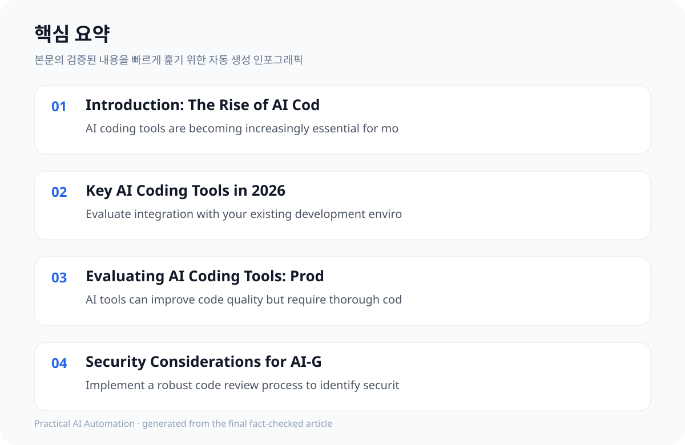

Introduction: The Rise of AI Coding Tools in 2026 #
AI coding tools are rapidly transforming the software development landscape in 2026. These tools, powered by advanced machine learning models, aim to enhance developer productivity, improve code quality, and automate repetitive tasks. However, the rapid proliferation of these tools also presents challenges, including the potential for decreased productivity and security vulnerabilities. This guide provides a critical assessment of the leading AI coding tools, offering guidance for developers and teams seeking to leverage these technologies effectively.
The increasing complexity of software projects and the demand for faster development cycles are driving the adoption of AI coding tools. While these tools offer significant benefits, it's crucial for developers to understand their limitations and potential drawbacks. This guide will help you navigate these challenges and make informed decisions about which tools to adopt.
- AI coding tools are becoming increasingly essential for modern software development.
- Careful evaluation is required to select the right tool for your team and project requirements.
- Understanding the trade-offs between productivity, code quality, and security is crucial.
Key AI Coding Tools in 2026 #
Several AI coding tools have emerged as leading solutions in 2026. These tools offer a range of capabilities, including code completion, code generation, debugging, and refactoring.
Here's a breakdown of some of the most prominent AI coding tools, categorized by their strengths and target use cases:
* **GitHub Copilot:** Remains the most widely adopted solution for mainstream teams due to its tight ecosystem integration and broad language support. * **Claude Code:** Leads in complex refactoring, debugging, and test generation capabilities, particularly with its terminal-native agentic approach. * **Cursor:** The best AI IDE for daily development with agentic capabilities, offering a seamless developer experience. * **Windsurf (Devin AI):** A powerful multi-file agentic editor for large-scale projects. * **Junie:** The first-party agent for JetBrains IDEs, providing an integrated development experience. * **Tabnine:** Offers privacy-focused code completion with self-hosted options. * **Amazon Q Developer:** Integrated with the AWS ecosystem, ideal for teams heavily invested in AWS services. * **Replit:** A collaborative AI-powered IDE with a focus on ease of use. * **CodeAutobot:** An open-source AI coding assistant based on the AutoGPT framework. * **Clip:** A fast, lightweight AI coding assistant. * **Perplexity AI:** An AI-powered search engine that can generate code snippets and explain complex concepts. * **System Prompts and Models of AI Tools (x1xhlol/deer-flow):** An open-source project that provides a framework for building and deploying custom AI coding agents.
],
- Evaluate integration with your existing development environment.
- Consider the specific needs of your team and project requirements.
- Assess the learning curve and setup time for each tool.
Evaluating AI Coding Tools: Productivity and Quality Considerations #
While AI coding tools can significantly improve code quality by providing suggestions, auto-completing code, and identifying potential errors, it's crucial to acknowledge the potential for decreased productivity. Studies, including METR's, have shown a 19% productivity decrease for experienced developers using AI tools, primarily due to the need for extensive code review and understanding.
The key is to view AI coding tools as *assistants*, not replacements for human developers. Developers must still critically evaluate the generated code, ensuring it aligns with project requirements and adheres to coding standards.
Furthermore, the learning curve associated with each tool can introduce overhead, particularly in the initial stages of adoption.
],
- AI tools can improve code quality but require thorough code review and testing.
- There is a potential productivity decrease for experienced developers using AI tools.
- Balance the benefits of AI-generated code with the need for code review and testing.

Security Considerations for AI-Generated Code #
AI coding tools introduce new security considerations. AI-generated code can contain vulnerabilities if not properly reviewed and tested. Developers must implement robust code review processes and utilize tools that offer built-in security checks.
It's essential to ensure that the AI coding tools you use have strong security protocols in place, including secure data handling, encryption, and access controls.
Additionally, developers should be aware of the potential for AI models to be exploited for malicious purposes, such as generating code that contains backdoors or vulnerabilities.
],
- Implement a robust code review process to identify security risks.
- Use tools with built-in security checks to detect vulnerabilities early.
- Ensure that the AI coding tools you use have strong security protocols in place.
Conclusion: Strategic Adoption of AI Coding Tools #
In conclusion, AI coding tools have become an essential part of the developer's toolkit in 2026, but strategic adoption is key. Developers and teams must carefully evaluate the trade-offs of each tool to make informed decisions.
It's crucial to view AI coding tools as assistants that augment human capabilities, not replacements.
By implementing robust code review processes and ensuring that the tools used have strong security protocols, developers can mitigate potential risks and maximize the benefits of AI coding tools.
],
- AI coding tools are essential for modern software development.
- Careful consideration is needed to select the right tool for your team and project requirements.
- Implementing a robust code review process and ensuring strong security protocols can help mitigate risks.